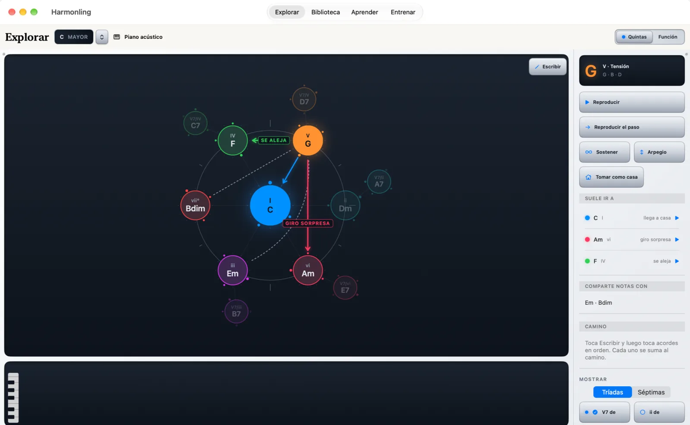
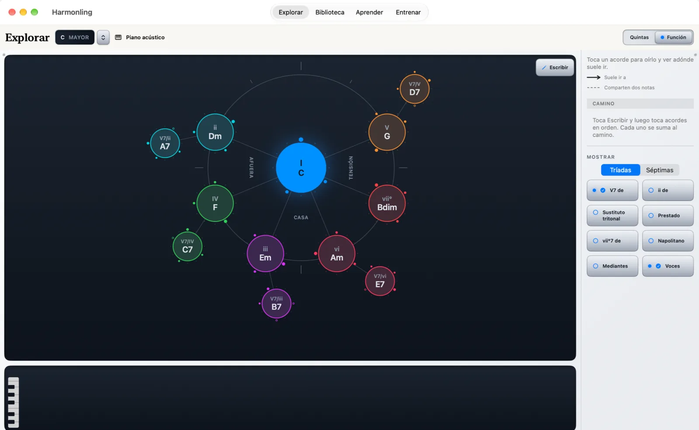
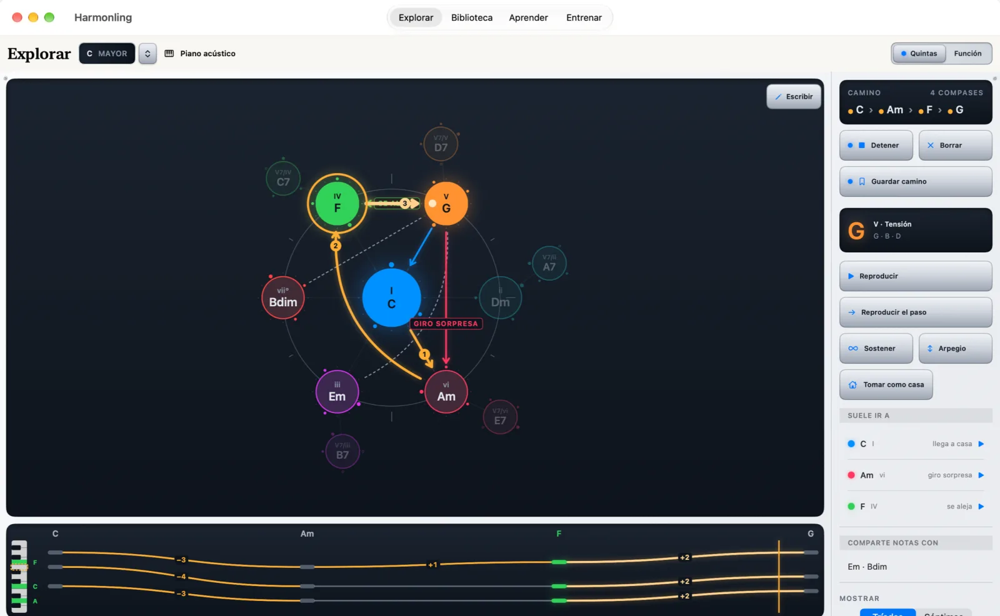
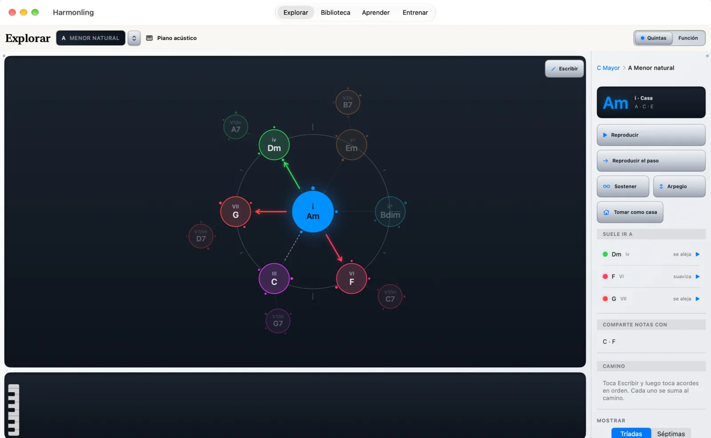
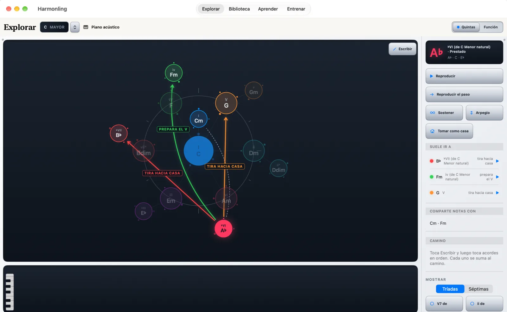
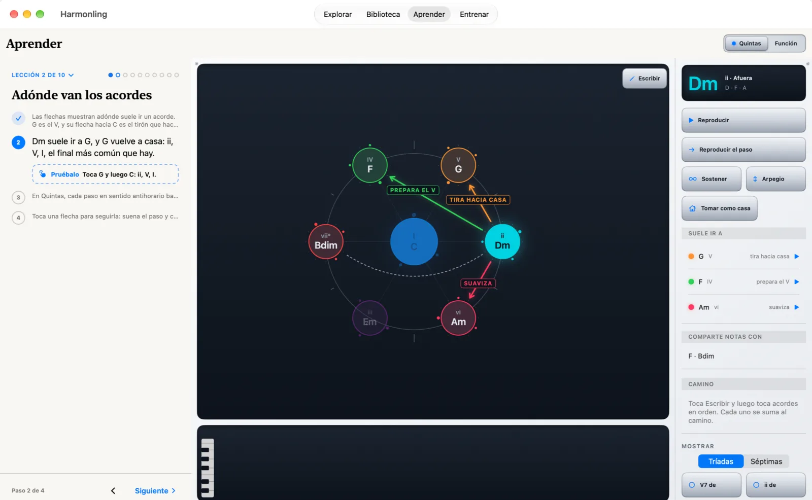
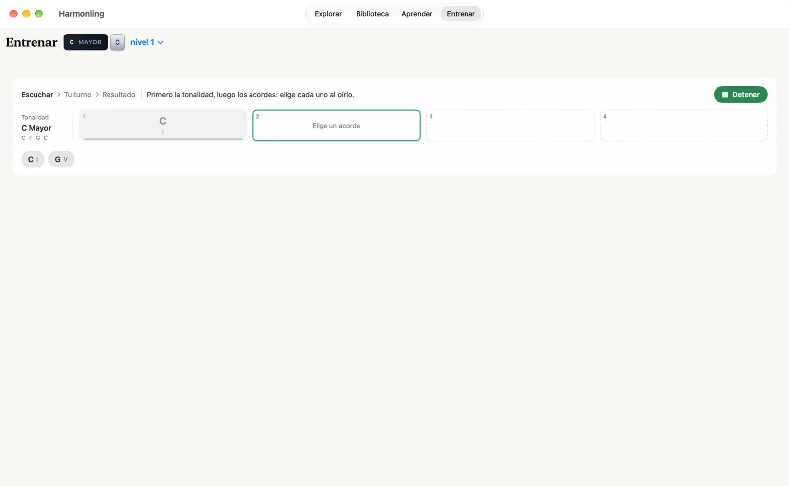

Escucha adónde un acorde quiere ir.
La app hermana de Fretling para la armonía, en Mac, iPad y iPhone. Un mapa que se toca con los acordes de una tonalidad: toca uno para oírlo y ver adónde suele ir, escribe un camino entre acordes y toma prestados acordes de fuera de la tonalidad.
Llega pronto al App Store: Mac, iPad y iPhone Lee la guía

Adónde va un acorde
Toca un acorde para oírlo. Las flechas muestran adónde suele ir; las líneas punteadas, los acordes con los que comparte dos notas. La vista Función agrupa la tonalidad en casa, lejos y tensión; Quintas la ordena en el círculo.
Mayor y menor natural, las tríadas y los dominantes secundarios son gratis.

Escribe un camino y escúchalo
Toca Escribir, y luego toca acordes en orden: cada uno se suma al camino. Reprodúcelo, y Voces muestra cómo se mueve cada nota de un acorde al siguiente.
Guardar camino lo guarda en tu Biblioteca, en cada dispositivo con tu cuenta de Apple. Tres caminos guardados son gratis; Pro guarda hasta 500. Pro

Cualquier acorde puede ser la casa
Elige un acorde y toca Tomar como casa: el mapa se redibuja a su alrededor, y oyes adónde llevan los mismos acordes desde un centro nuevo.
Los modos, de dórico a locrio, y la menor armónica y la melódica son Pro. Pro

Acordes de fuera de la tonalidad
En Mostrar, los satélites se suman al mapa: los dominantes secundarios (gratis) y, con Pro, el ii de cada acorde, los sustitutos tritonales, los acordes prestados con Tomar prestado de, el vii°7 de, el napolitano y las mediantes. Séptimas convierte cada acorde en su séptima. Pro

Diez lecciones para tocar
Cada lección es una página que te pide tocar el acorde que nombra, en el mapa. El curso se completa a medida que avanzas, de la casa y sus vecinos hasta los modos.
Las dos primeras lecciones son gratis. Pro

Nómbralo de oído
Suena una progresión en la tonalidad de Explorar. Nombra cada acorde que oyes; los niveles suben de la casa y su quinta a toda la tonalidad.
Los niveles 1 a 4 son gratis. Pro

Gratis para siempre. Pro es la parte profunda.
Qué es gratis
- El mapa, las dos vistas y todos los controles de reproducción
- Mayor y menor natural, en cada tonalidad
- Las tríadas y los dominantes secundarios (V7 de)
- Escribir, Voces y tres caminos guardados
- Las dos primeras lecciones
- Los niveles 1 a 4 de Entrenar
Qué añade Pro
- Los modos, y la menor armónica y la melódica
- Séptimas
- ii de, sustitutos tritonales, acordes prestados, vii°7 de, el napolitano
- Las mediantes
- Todas las lecciones y todos los niveles de Entrenar
- Hasta 500 caminos guardados
Una compra, una vez: sin suscripción. Prueba Pro gratis 14 días. El desbloqueo cubre cada Mac, iPad y iPhone con tu cuenta de Apple, y admite En familia. Nada que hoy sea gratis pasa después detrás del desbloqueo. La comparación completa
Privado por diseño
Harmonling funciona en tu dispositivo. No hay cuenta, ni analíticas, ni seguimiento, y no pide permisos: ni micrófono, ni Bluetooth, ni ubicación. Tus caminos guardados viajan en tu propio almacenamiento de iCloud, que solo leen tus dispositivos. La política de privacidad